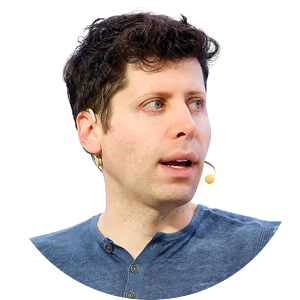

|  |
Sam AltmanBorn: April 1985, US Education: Standford University (dropped out) Occupation: Entrepreneur Title: CEO of OpenAI |
Samuel Harris Altman is an American entrepreneur, investor, and programmer. He was the co-founder of Loopt and is the current CEO of OpenAI as of 2019. Additionally, he co-founded Worldcoin in 2020. Formerly, he served as the president of Y Combinator and briefly as the CEO of Reddit. He has further invested in nuclear energy, as well as numerous technology companies. Altman was named one of the 100 most influential people in the world by Time magazine in 2023.
In 2005, at age 19, Altman co-founded and became CEO of Loopt, a location-based social networking mobile application. After raising more than $30 million in venture capital, Loopt was shut down in 2012 after failing to get traction. It was acquired by the Green Dot Corporation for $43.4 million.
Sam Altman is an American entrepreneur, investor, and programmer who co-founded Loopt and Worldcoin, and is the CEO of OpenAI. He was also the president of Y Combinator, a startup accelerator that funded many successful companies and launched several research projects. He has been recognized as one of the most influential people in the world by Time magazine and received several awards and honors.
Altman is an investor in many companies, including Airbnb, Stripe, Reddit, Asana, Pinterest, Teespring, Zenefits, FarmLogs, True North, Shoptiques, Instacart, Optimizely, Verbling, Soylent, Reserve, Vicarious, Clever, Notable PDF (now Kami), and Retro Biosciences. He was the CEO of Reddit for eight days in 2014 after CEO Yishan Wong resigned. He announced the return of Steve Huffman as CEO on July 10, 2015.
In 2019, Sam Altman left Y Combinator to focus full-time on OpenAI as CEO. OpenAI was founded in 2015 and is a capped-profit research company whose stated goal is to advance artificial intelligence in a way that is most likely to benefit humanity as a whole, rather than cause harm. The organization was initially funded by Altman, Greg Brockman, Elon Musk, Jessica Livingston, Peter Thiel, Microsoft, Amazon Web Services, Infosys, and YC Research. In total, when the company launched in 2015, it had raised $1 billion from outside funders.
| Active listening skills | ⭐⭐⭐⭐⭐ | Communication skills | ⭐⭐⭐⭐⭐ |
| Computer skills | ⭐⭐⭐⭐⭐ | Leadership skills | ⭐⭐⭐⭐⭐ |
| Management skills | ⭐⭐⭐⭐⭐ | Problem-solving skills | ⭐⭐⭐⭐⭐ |
| Time management skills | ⭐⭐⭐⭐⭐ |